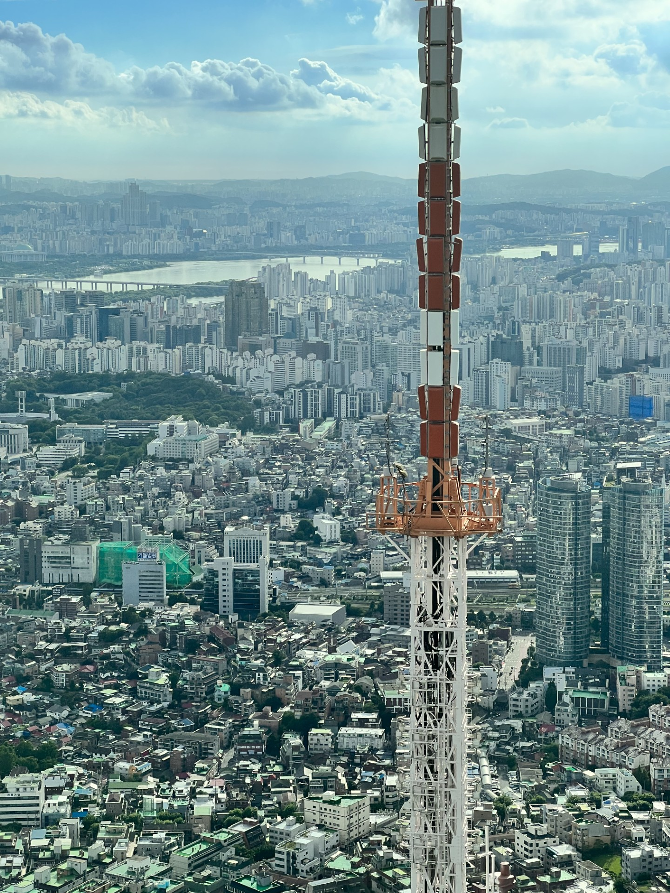
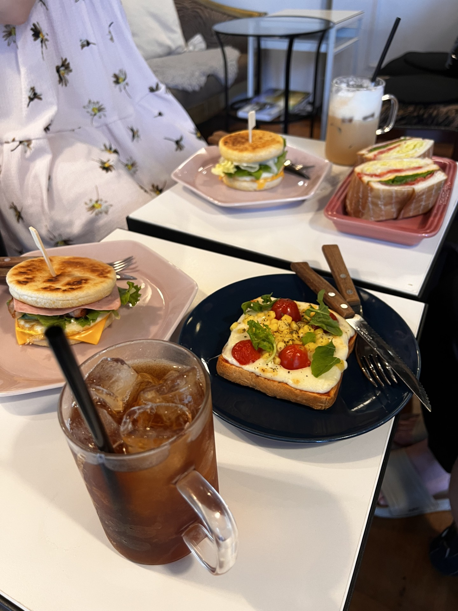

Soul päivällä
Kuva otettu Namsan tornista
Yksi lempi kohteita Soulista. Näköala on noin 370 metrin korkeudesta. Torni rakennettu Namsan vuorelle, joka on 270 metriä korkea keskellä Soulin kaupunkia.
Soulin sää tällä hetkellä
Soul yöllä
Kuva näköalatasanteesta Namsan vuorelta noin 270 korkeudesta.

Namsan vuori on käytännössä sama kohde kuin Namsanin torni, mutta hieman matalemmalla ollaan.
Namsan vuori oli kokonaisvaltaisesti lempi kohteeni. Kävin tornissa päiväs aikaan ja myöhemmin matkallani pelkästään ylös vuorelle, mutta jätin ostamatta lippua torniin. Vuorella oli paljon turisteja, perheitä, nuoria ja urheilijoita. Tunnelma oli ihana. Etenkin vierailessani vuorella yöllä tunnelma oli epärealistinen. Seoulin suurkaupungin valot olivat, jotakin mieletöntä Suomessa asuvalle. Vuori sijaitsee keskellä kaupunkia, joten jokaiseen suuntaan on upeat maisemat ja olisi halunnut laittaa kuvia jokaiseen suuntaan.
Cafe Gio
Cafe Gio oli meidän Airbnb:n lähellä oleva kahvila. Käytiin siellä melkein joka aamu matkamme aikana. Sitä pyöritti korealainen pariskunta. He tykästyivät meihin matkan aikana myös ja rauhallisilla hetkillä tulivat juttelemaan meidän kanssaan ja välillä tarjosivat pieniä herkkuja meille. Heillä oli myös todella kauniita ja laadukkaita kangaskasseja myynnissä. Kahvilalle vahva suositus. Oli hyvällä sijainnilla lähell Soul Station:ia.